5 Grundglieder
Wir wir dies im Zeitbereich gemacht haben, wollen wir nun die Tabelle der Grundglieder mit den Frequenzbereich-Informationen ergänzen.
- Du kannst den Frequenzgang für die typischen Grundglieder im Bode-bzw. Nyquist-Diagramm skizzieren (Amplitudengang & Phasengang).
- Du kennst die allgemeine Form des Frequenzganges (Übertragungsfunktion) und kannst damit Berechnungen durchführen.
- Du kannst den Frequenzgang einer Reihenschaltung und einer Parallelschaltung bestimmen.
5.1 Frequenzgang der Grundglieder
☝️ In Boris wird der Frequenzgang eines Übertragungsgliedes entweder durch Rechtsklick auf das Übertragungsglied → Frequenzgang ermitteln oder durch Klick auf das gleichnamige Icon in der Werkzeugleiste angezeigt. Es öffnet sich ein separates Fenster, in dem zwischen Bode- und Nyquist-Diagramm gewechselt werden kann.
P-Glied
F(j \omega) = K_P \tag{5.1}
Das P-Glied weist keine Verzögerung auf und daher bleibt der Frequenzgang für alle Frequenzen reell. Amplituden- und Phasengang sind daher trivial.
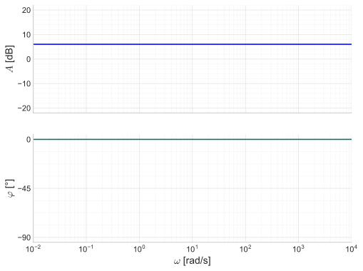
Die Darstellung im Nyquist-Diagramm ist ein Punkt auf der reellen Achse bei K_P.
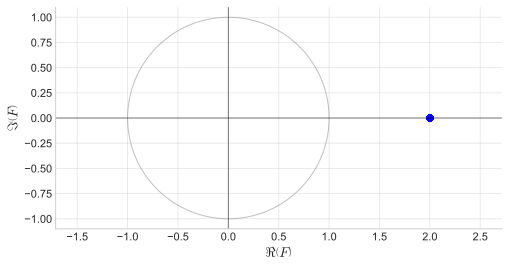
P-T1-Glied
F(j \omega) = \frac{K_P}{1 + j \omega T_1} \tag{5.2}
Der Amplitudengang des P-T1-Gliedes weist einen charakteristischen “Knick” auf, der bei der Grenzfrequenz (oder Knick- bzw. Eckfrequenz) \omega_1 = 1 / T_1 auftritt. Frequenzen oberhalb der Grenzfrequenz werden mit -20 dB/Dek. abgeschwächt.
Der Phasengang zeigt bei der Grenzfrequenz genau -45° und nähert sich für hohe Frequenzen asymptotisch -90° an.
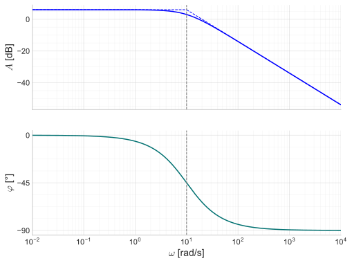
Im Nyquist-Diagramm “startet” die Kurve bei K_P auf der reellen Achse und nähert sich für hohe Frequenzen asymptotisch der imaginären Achse an und läuft schliesslich in den Ursprung.
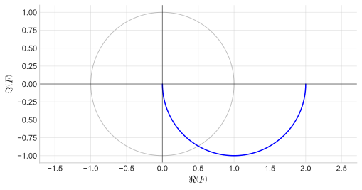
P-T2-Glied
F(j \omega) = \frac{K_P}{(1 + j \omega T_1)(1 + j \omega T_2)} = \frac{K_P}{1 + j \omega (T_1 + T_2) + (j \omega)^2 T_1 T_2} \tag{5.3}
Der Amplitudengang des P-T2-Gliedes zeigt i. Allg. zwei Knicke da nun zwei Zeitkonstanten (Energiespeicher) vorliegen. Nach dem ersten Knick fällt die Amplitude um -20 dB/Dek. und nach dem zweiten Knick um -40 dB/Dek. (Man erkennt hier gut, dass ein P-T2-Glied einer Reihenschaltung von zwei P-T1-Gliedern entspricht.)
Die Phase fällt pro Knick jeweils um -90° ab, d. h. läuft für hohe Frequenzen asymptotisch gegen -180°.
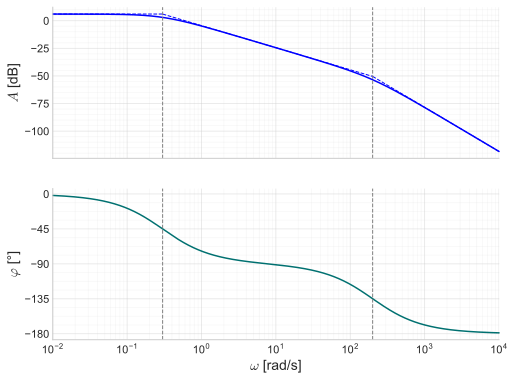
Sind die beiden Zeitkonstanten des P-T2-Gliedes identisch, d. h. T_1 = T_2, so überlagern sich die beiden Knicke und die Steigung geht direkt in -40 dB/Dek. über.
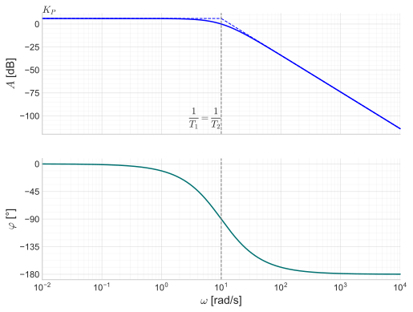
Im Nyquist-Diagramm geht die Ortskurve des P-T2-Gliedes in den dritten Quadranten und läuft letztlich von der negativen reellen Achse (-180°) in den Ursprung.
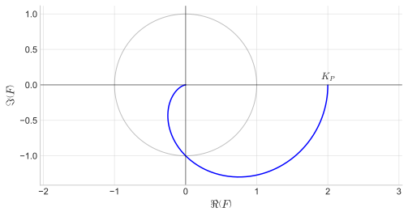
P-T2S-Glied
F(j \omega) = \frac{K_P}{1 + j \omega \dfrac{2 D}{\omega_0} + (j \omega)^2 \dfrac{1}{\omega_0^2}} \tag{5.4}
Das schwingfähige P-T2S-Glied wird bekanntlich mit der Kennkreisfrequenz \omega_0 und dem Dämpfungsgrad D beschrieben. Aufgrund des Resonanzverhaltens (bei geringen Dämpfungsgraden) kommt es im Bereich der Kennkreisfrequenz zu einer Amplitudenüberhöhung. Für hohe Frequenzen fällt der Amplitudengang (wie beim P-T2-Glied) um -40 dB/Dek ab. Die Phase fällt beim Resonanzpeak ziemlich schlagartig ab. Für höhere Dämpfungsgrade geht das Verhalten allmählich in das des P-T2-Gliedes über (strichpunktierte Linien).
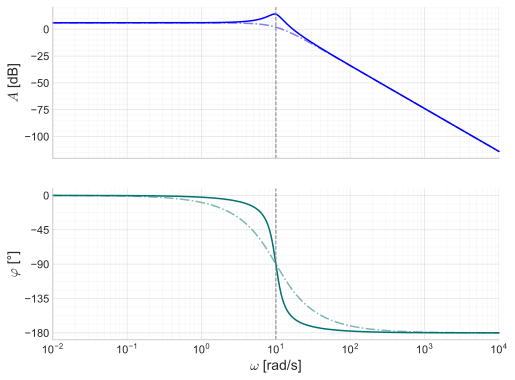
Im Nyquist-Diagramm sieht man die Amplitudenüberhöhung sehr schön.
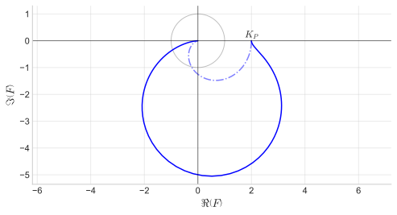
P-Tn-Glied
F(j \omega) = \frac{K_P}{(1 + j \omega T_1)(1 + j \omega T_2) \dots (1 + j \omega T_n)} \tag{5.5}
Beim P-Tn-Glied sind n Energiespeicher (Zeitkonstanten) vorhanden und man kann sich leicht vorstellen, wie Amplituden- und Phasengang aussehen:
- Im Amplitudengang tritt pro Energiespeicher ein Knick auf bei der Knickfrequenz \omega_{1,2,\dots} = 1 / T_{1,2,\ldots}. Die Steigung fällt pro Knick um -20 dB/Dek und erreicht letztlich n \cdot (-20 dB/Dek.)
- Die Phase fällt pro Knick um -90° ab, d. h. letztlich resultiert eine Phasenverschiebung von n \cdot (-90°).
Nachfolgend ist das Bode-Diagramm eines P-T3-Gliedes abgebildet.
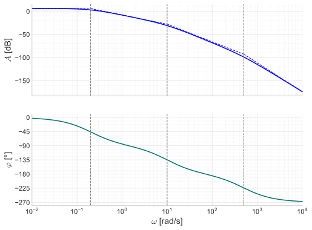
Das in Boris implementierte P-Tn-Glied ist ein Spezialfall, bei dem alle Zeitkonstanten identisch sind, d. h. T_1 = T_2 = ... = T_n = T. In diesem Fall überlagern sich die Knicke und die Steigung geht direkt in n \cdot (-20 dB/Dek.) über.
F(j \omega) = \frac{K_P}{\left(1 + j \omega T\right)^n} \tag{5.6}
Nachfolgend ist das Bode bzw. Nyquist-Diagramm eines P-T3-Gliedes mit identischen Zeitkonstanten abgebildet.
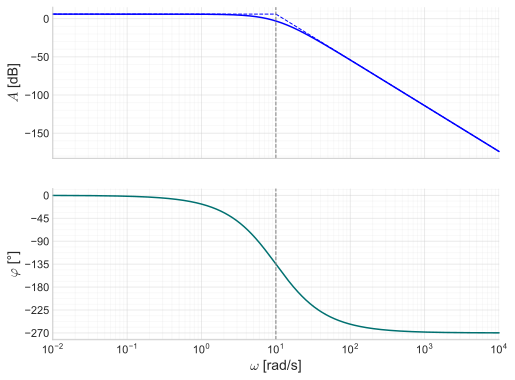
Die Ortskurve überstreicht im Nyquist-Diagramm n Quadranten (hier n = 3). Analog für n = 4, n = 5, … usw.
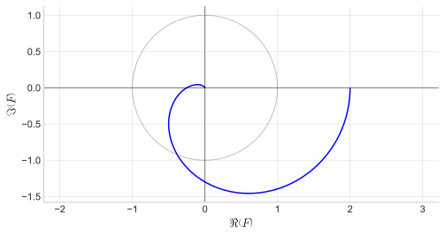
P-Tt-Glied
F(j \omega) = K_P \cdot e^{-j \omega \, T_t} \tag{5.7}
Das Totzeitglied tanzt wie immer etwas aus der Reihe. Das Totzeitglied wird im Zeitbereich nicht durch eine Differentialgleichung beschrieben, sondern durch einen reinen Zeitversatz. Der Zeitversatz (Totzeit T_t) wird im Frequenzbereich zu einem e^{-j \omega T_t}-Term. Dieser Term hat keinen Einfluss auf die Amplitude, bewirkt aber eine Phasenverschiebung, die mit zunehmender Frequenz immer weiter zunimmt.
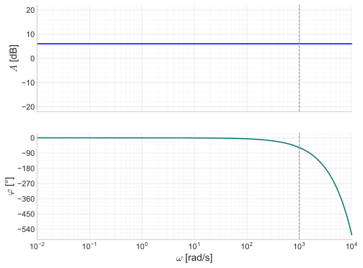
Die Totzeit T_t entspricht dem Kehrwert der Kreisfrequenz, bei der die Phase um 1 rad abgefallen ist, was ca. -57° entspricht.
Da beim Totzeitglied der Amplitudengang konstant bleibt und die Phase laufend abnimmt,zeigt das Nyquist-Diagramm einen Kreis um den Ursprung mit Radius K_P.
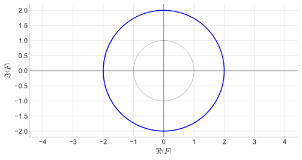
I-Glied
F(j \omega) = \frac{K_I}{j \omega} = \frac{1}{j \omega \, T_I} \tag{5.8}
Der Frequenzgang von Gliedern ohne Ausgleich, also I-Gliedern, hat keinen konstanten Term im Nenner, d. h. der Amplitudenverlauf hat auch bei tiefen Frequenzen bereits eine Steigung von -20 dB/Dek. und die Phase ist konstant bei -90°. Beim Nulldurchgang des Amplitudenganges kann der Kehrwert der Integrierzeit, d. h. 1/T_I abgelesen werden (dies entspricht gerade dem Integrierbeiwert K_I = 1/T_I).
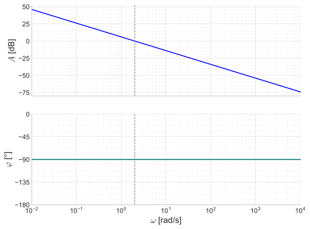
Da die Phase beim I-Glied konstant -90° beträgt, liegt die Ortskurve im Nyquist-Diagramm auf der negativen imaginären Achse und läuft von “unten” in den Ursprung.
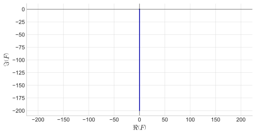
I-T1-Glied
F(j \omega) = \frac{K_I}{j \omega \, (1 + j \omega T_1)} = \frac{K_I}{j \omega + (j \omega)^2 \, T_1} \tag{5.9}
Kommt beim I-Glied ein Energiespeicher (Verzögerung) hinzu, so entsteht ein I-T1-Glied. Der Amplitudengang weist daher wiederum einen Knick auf bei \omega_1 = 1 / T_1 und der Phasengang fällt wiederum zusätzlich um 90° ab.
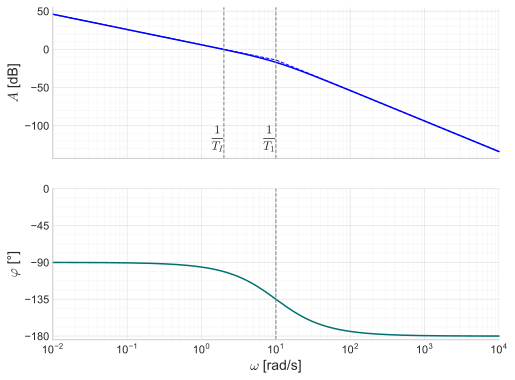
Da die zusätzliche Verzögerung zu einer weiteren Phasenabsenkung auf -180° führt, läuft die Ortskurve im Nyquist-Diagramm von der negativen reellen Achse in den Ursprung.
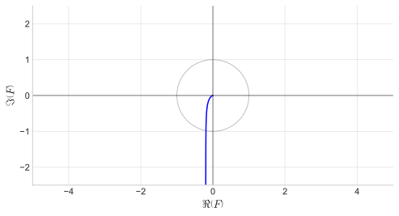
D-Glied
F(j \omega) = j \omega \, K_D = j \omega \, T_D \tag{5.10}
Der Vollständigkeit halber sei hier wiederum auch das Differenzierglied (D-Glied) aufgeführt, da es u. a. im PD/PID-Regler enthalten ist. Das D-Glied ist das “Inverse” vom I-Glied und weist dementsprechend einen zum I-Glied gespiegelten Verlauf auf (Steigung des Amplitudengangs ist +20 dB/Dek., Phase ist konstant +90°). Beim Nulldurchgang des Amplitudenganges kann der Kehrwert der Differenzierzeit, d. h. 1/T_D abgelesen werden.
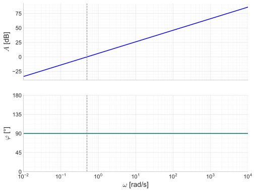
Da die Phase beim D-Glied konstant +90° beträgt, läuft die Ortskurve im Nyquist-Diagramm aus dem Ursprung auf der positiven imaginären Achse ins Unendliche.
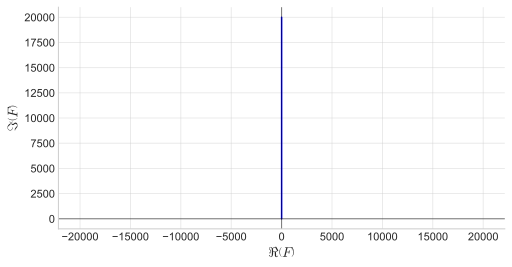
D-T1-Glied
F(j \omega) = \frac{j \omega \, K_D}{1 + j \omega \, T_1} \tag{5.11}
Wie wir bereits wissen, ist ein reines D-Glied nicht realisierbar und wird daher immer mit einer (wenn auch kleinen) Zeitkonstanten als D-T1-Glied implementiert. Es tritt darum wiederum ein Knick im Amplitudengang auf (da die Steigung des D-Gliedes +20 dB/Dek. ist und durch die Verzögerung nun die Steigung um -20 dB/Dek. abnimmt, resultiert gerade 0 dB/Dek., der Verlauf wird also horizontal.)
Vergleich man die Verläufe mit dem P-T1-Glied, so erkennt man gut, dass das D-T1 im Gegensatz zum P-T1Glied tiefe Frequenzen abschwächt und hohe Frequenzen verstärkt, d. h. Hochpassverhalten aufweist.
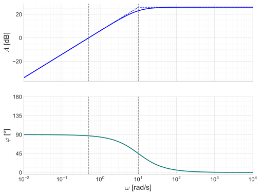
Da die zusätzliche Verzögerung zu einer Phasenabsenkung auf 0° und zu einer konstanten Amplitude führt, dreht sich die Ortskurve im Nyquist-Diagramm von der imaginären Achse weg und endet auf der positiven reellen Achse.
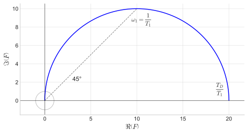
5.2 Reihenschaltung von Übertragungsgliedern
Die Reihenschaltung (Serienschaltung) von mehreren Übertragungsgliedern entspricht der Multiplikation ihrer Frequenzgänge.
F_{\mathrm{seriell}} = F_1 \cdot F_2 \tag{5.12}
Dies werden wir später benötigen, um den Frequenzgang des offenen Regelkreises (= Reihenschaltung von Regler und Regelstrecke) zu bestimmen.
Durch die dB-Skala (Logarithmierung) wird die Multiplikation zu einer Addition, d. h. die Reihenschaltung zeigt sich als Summe der individuellen Bode-Diagramme. Wir können also sowohl die Amplituden- als auch die Phasengänge addieren, um das Bode-Diagramm der Reihenschaltung zu erhalten.
\begin{align*} A_\mathrm{seriell}^{[\mathrm{dB}]} &= A_1^{[\mathrm{dB}]} + A_2^{[\mathrm{dB}]}\\[5pt] \varphi_{\mathrm{seriell}} &= \varphi_1 + \varphi_2 \end{align*}
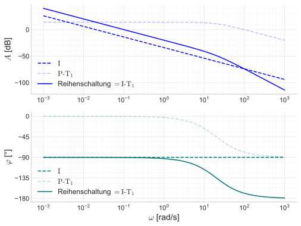
☝️ Dies hilft uns, Bode-Diagramme von Übertragungsgliedern zu skizzieren, die nicht direkt in unserer Tabellen enthalten sind.
☝️ Für die Anzeige des Frequenzganges einer Reihenschaltung in Boris alle Übertragungsglieder der Reihenschaltung markiert werden und anschliessend wie gehabt der Frequenzgang ermittelt werden. (Es spielt dabei keine Rolle, ob die Übertragungsglieder-Blöcke miteinander verbunden sind oder nicht bzw. in welcher Reihenfolge sie angeordnet sind.)
5.3 Parallelschaltung von Übertragungsgliedern
Parallelschaltungen spielen für uns eine untergeordnete Rolle, aber um zu verstehen, wie die Bode-Diagramme der Regler (PI/PD/PID) zustande kommen, wollen wir dies hier kurz anschauen. Die Parallelschaltung entspricht einem Summationsknoten im Blockschaltbild.
Die Parallelschaltung von mehreren Übertragungsgliedern entspricht der Addition ihrer Frequenzgänge.
F_{\mathrm{parallel}} = F_1 + F_2 \tag{5.13}
Der Amplitudengang einer Parallelschaltung kann näherungsweise skizziert werden, indem jeweils das dominierende Übertragungsglied, d. h. das Übertragungsglied mit der grösseren Amplitude berücksichtigt wird. Dies entspricht der \max-Überlagerung der Amplitudengänge.
Der Phasengang wird dann entsprechend dem dominierenden Übertragungsglied bestimmt (und im Übergangsbereich sanft/fliessend verbunden).
\begin{align*} A_\mathrm{parallel}^{[\mathrm{dB}]} & \approx \max \left( A_1^{[\mathrm{dB}]}, A_2^{[\mathrm{dB}]} \right) \\[5pt] \varphi_{\mathrm{parallel}} & \approx \begin{cases} \varphi_1 & \text{falls } A_1^{[\mathrm{dB}]} \gg A_2^{[\mathrm{dB}]} \\[4pt] \varphi_2 & \text{falls } A_2^{[\mathrm{dB}]} \gg A_1^{[\mathrm{dB}]} \end{cases} \end{align*}
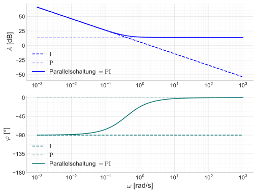
5.4 Regler
Wie erwähnt, entsprechen die Regler (PI/PD/PID) einer Parallelschaltung der elementaren Grundglieder P, I und D. Nachfolgend sind die Frequenzgänge der Regler dargestellt.
PI-Glied
F(j \omega) = K_P \left(1 + \frac{1}{j \omega \, T_i}\right) \tag{5.14}
Das PI-Glied entspricht der Parallelschaltung von P- und I-Glied, d. h. der Amplitudengang entspricht der \max-Überlagerung von P- und I-Glied.
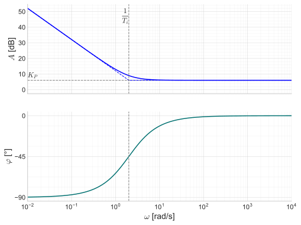
PD-Glied
F(j \omega) = K_P \left(1 + j \omega \, T_d \right) \tag{5.15}
Der Amplitudengang des PD-Gliedes entspricht der \max-Überlagerung von P- und D-Glied. Da der D-Anteil jeweils mit einer kleinen Verzögerung implementiert wird, sprechen wir auch vom PD-T1-Regler oder realem PD-Relger (strichpunktierte Linie).
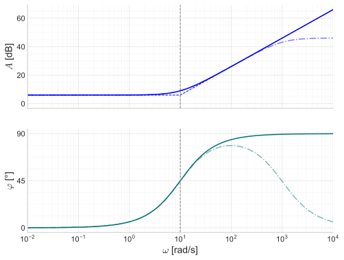
PID-Glied
F(j \omega) = K_P \left(1 + \frac{1}{j \omega \, T_i} + j \omega \, T_d \right) \tag{5.16}
Der PID-Regler kann als \max-Überlagerung von P-, I- und D-Glied betrachtet werden. Der D-Anteil wird wiederum mit einer Verzögerung implementiert, d. h. wir sprechen vom PID-T1-Regler oder realem PID-Regler (strichpunktierte Linie).
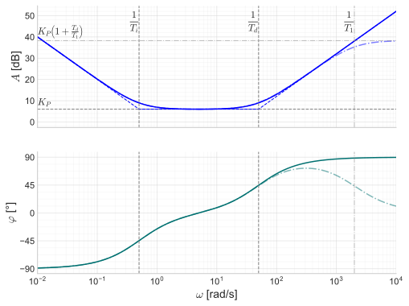
5.5 Standardform des Frequenzgangs
Vergleichen wir die obigen Frequenzgänge, so erkennen wir ein allgemeines Muster. Wir können den Frequenzgang eines beliebigen Übertragungsgliedes in der folgenden Form darstellen:
F(j \omega) = \frac{\textcolor{blue}{b_0} + j \omega \, \textcolor{blue}{b_1} + (j \omega)^2 \, \textcolor{blue}{b_2} + \ldots + (j \omega)^m \, \textcolor{blue}{b_m}}{\textcolor{red}{a_0} + j \omega \, \textcolor{red}{a_1} + (j \omega)^2 \, \textcolor{red}{a_2} + \ldots + (j \omega)^n \, \textcolor{red}{a_n}} \tag{5.17}
Diese Darstellung heisst Standardform des Frequenzgangs. Je nach Typ des Übertragungsgliedes sind mehr oder weniger Koeffizienten a_i bzw. b_i vorhanden und die Werte der Koeffizienten ergeben sich aus den Parametern des Übertragungsgliedes.
- Bsp.: P-T1-Glied: b_0 = K_P, a_0 = 1, a_1 = T_1 (alle anderen Koeffizienten = 0)
- Bsp.: I-Glied: b_0 = K_I, a_0 = 0, a_1 = 1 (alle anderen Koeffizienten = 0)
☝️ Je nach Normierung der Koeffizienten kann ein und dasselbe Übertragungsglied unterschiedliche Koeffizienten haben (der Frequenzgang (Bruch) ändert sich dadurch natürlich nicht). In der uns geläufigen Schreibweise wird auf den konstanten Koeffizienten im Nenner normiert, d. h. a_0 = 1 (bzw. a_1 = 1 bei I-Gliedern). Dann entsprechen die Koeffizienten direkt den bekannten Paramtern des Übertragungsgliedes (z. B. K_P, K_I, T_1, …). In Boris wird hingegen auf den Koeffizienten des höchsten Grades im Nenner normiert, d. h. a_n = 1. (Die Koeffizienten des Frequenzganges werden in Boris unter dem Reiter Übertragungsfunktion im Frequenzgangfenster angezeigt.)
Damit ein Übertragungsglied realisierbar ist, muss der Grad des Zählers m kleiner oder gleich dem Grad des Nenners n sein.
m \leq n \quad \rightarrow \textsf{realisierbar} \tag{5.18}
Ist der Grad des Zählers größer als der Grad des Nenners, so spricht man von einem nicht-realisierbaren Übertragungsglied. Dies ist z. B. beim reinen D-Glied der Fall:
\textsf{D-Glied:}\quad F(j \omega) = j \omega \, T_D \quad \rightarrow \textsf{nicht realisierbar}
Darum wird das D-Glied immer mit einer Verzögerung implementiert, d. h. es wird zu einem D-T1-Glied, damit es realisierbar ist. (Es wird dann auch reales D-Glied genannt.)
Aufgaben
Identifiziere das Übertragungsglied und die Konstanten (Parameter) anhand des nachfolgenden Bode-Diagramms.
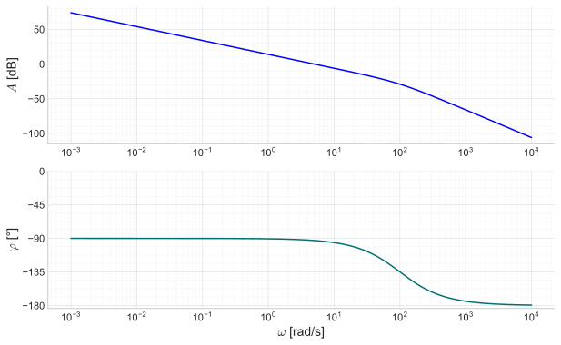
Bestimme die Koeffizienten (b_0, \ldots, a_0, \ldots) der Standardform des Frequenzgangs für ein P-T2-Glied mit K_P = 5 und T_1 = 2 \, \mathrm{s} und T_2 = 0.1 \, \mathrm{s}?
Nachfolgend ist das Bode-Diagramm und das Nyquist-Diagramm eines Übertragungsgliedes dargestellt. Zeichne die roten Punkte jeweils in das andere Diagramm ein.
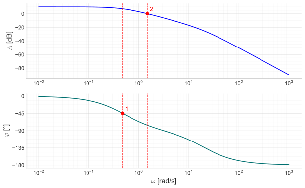
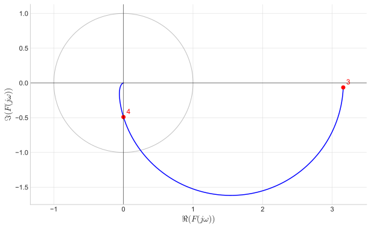
Welcher der folgenden Frequengänge ist nicht realisierbar?
F(j\omega)=\frac{3 + 2 \, j\omega + 4 \, (j\omega)^2}{(1 + j\omega) \, (3 + j\omega)}
F(j\omega)=\frac{(j\omega+1)^2}{j\omega \, (j\omega+5)}
F(j\omega)=2 \, \left(1+\frac{1}{3 j\omega}+0.5 j\omega\right)